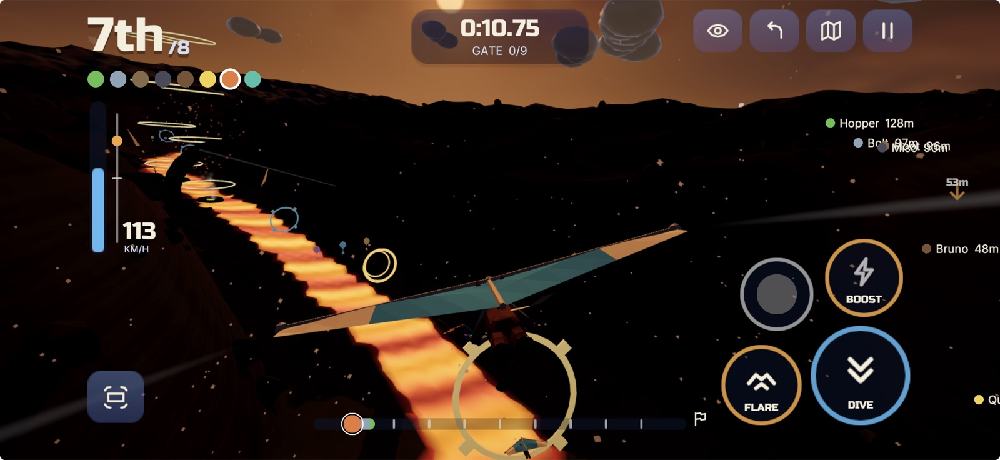
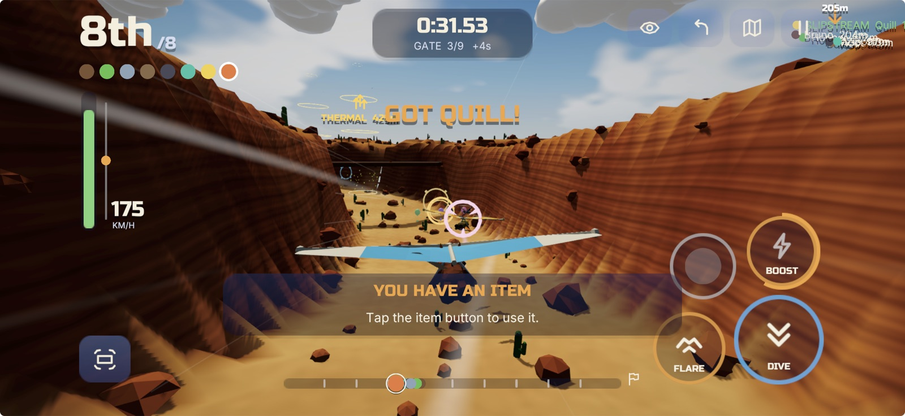
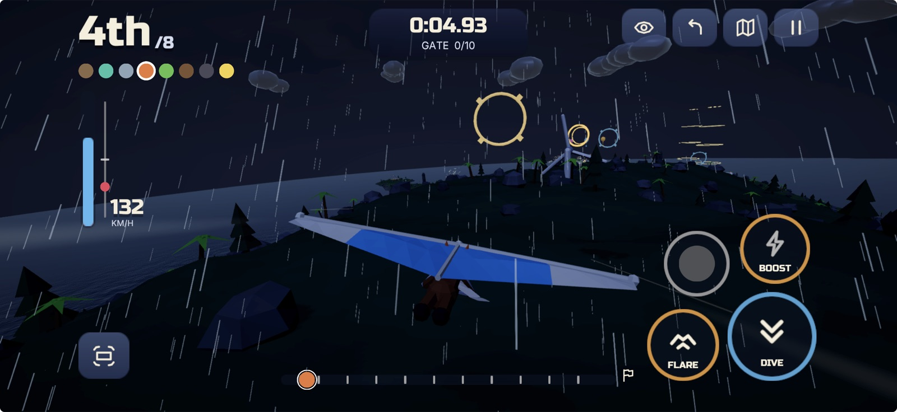
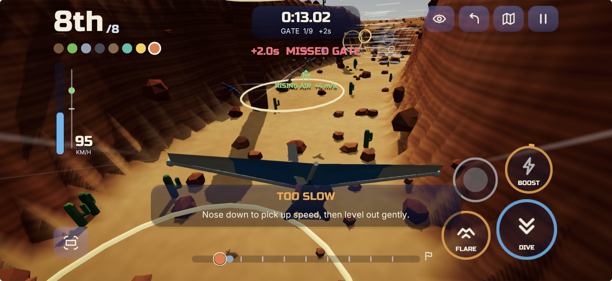
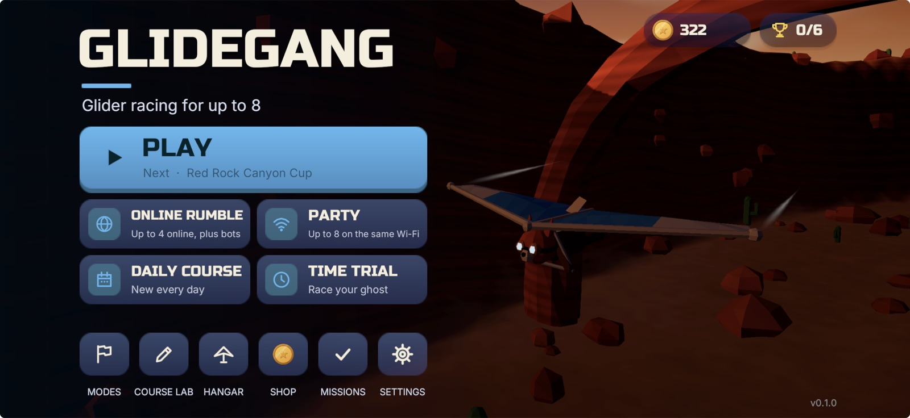

[ glidegang ] · glider racing
Testing nowon our own iPhones · TestFlight next · then the App Store
Eight gliders. One canyon.
Eight pilots launch off a cliff top and dive through canyons, sea stacks, waterfalls and volcano vents — riding updrafts, stealing slipstreams and bumping rivals into rock walls on the way to the landing pad.

racers in every race
places to race
items, weighted to the back
a race




[ how it flies ]
Speed is height.
Diving trades altitude for speed, climbing spends it. Updrafts are the only free height — so the race is about reading the air.
Slipstreams, short courses and items that favour the back keep all eight racers close.
Bumps, gusts and shields: contact is part of racing, and funny, never frustrating.
No hard stops. Scrape a wall and bounce off; crash and you’re back in 1.5 seconds.
Tilt or one stick. The skill is in racing lines, dive timing and stringing thermals together.
Bubble Shield, Rocket, Thermal Bomb, a Tether to the racer ahead — and a Storm Cloud for the leader.
Lay a route through a map, place gates and thermals, and share it once a bot can finish it.
[ six places to race ]
Read the air in each.
Three courses in each, plus a new seeded course every day.
[ modes ]
Race, Cup, Rumble.
[ lab notes ] · from the build log
Tuned with bots, then with people.
Bots you can beat. A stand-in new player finishes 2.4th on average on Easy, 5.8th on Normal and 8th on Hard, over eight courses.
Every course is flyable. 60 tests pass, and a bot finishes every course without crashing more than twice.
On a real iPhone. The screens above are from it. Next: two phones on the same Wi-Fi, then Game Center.
Built with overcli.
Glidegang is the newest game in the lab: one long overcli session took it through all twelve milestones, with every test passing.